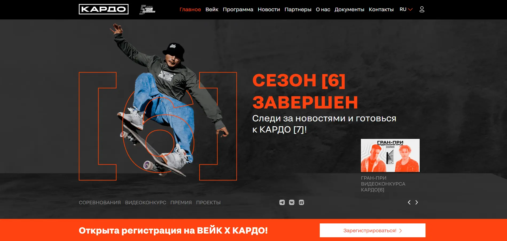
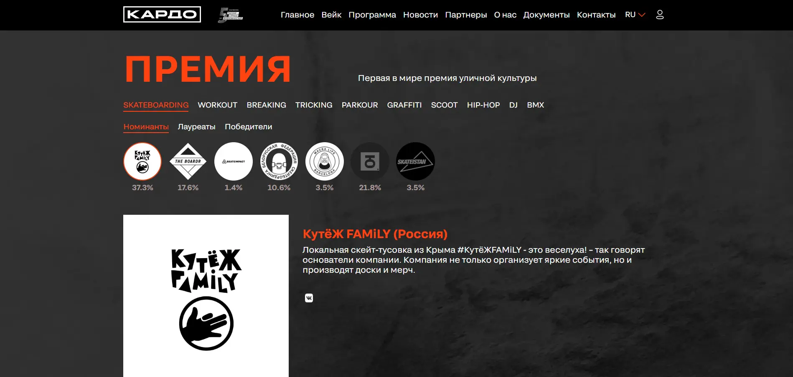
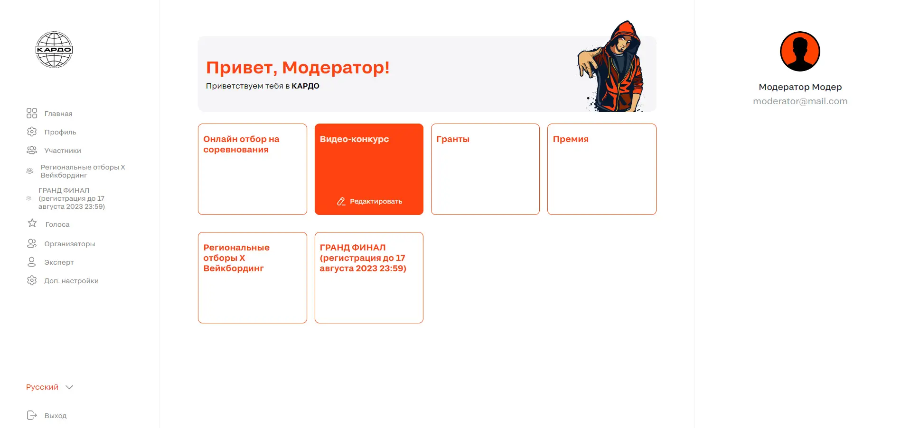

В 2022 году мы масштабировались в полноценную экосистему, которая в том числе включила в себя одноименный благотворительный фонд для поддержки начинающих свой путь талантов. В 2023 году конкурс-премия КАРДО включена в платформу АНО «Россия — страна возможностей».
6 сезон КАРДО создан, чтобы открыть новые границы настолько важной для всех нас культуры, давно и надолго интегрированной в нашу ДНК. Мы здесь, чтобы становиться лучше и мотивировать друг друга на победу. Чтобы наши голоса зазвучали как никогда громко!
Мы здесь, чтобы КАРДО [6] вошел в историю!
Узнать больше о проекте. Проект напасан с помощью :
CMS Wordpress, Backend lang - PHP 8.1, Frontend lang - JS vanilla (местами jquery), Style - CSS3(БЭМ) Чем занимался на проекте :
Проект был передан нашей команде от предыдущих разрабочтков которые просрочили сдачу на 2 месяца, по условиям аутстафа я в паре с бекендером полностью разработал страницу премия которая включала в себя обращение к серверу за данными, обработку для первоначального отображения в корректном, отсортированном по дефолтным фильтрам виде, подключение модального окна при голосовании (на данный момент голосование по данному направлению может быть прекращено) которое включало в себя систему выбора рейтинга, защиту от повторных голосований. Доделал около 50% личного кабинета (отдельный для каждого из ролей - участник, модератор, администратор, эксперт) включая систему выдачи сертификатов участникам, регистрацию с валидацией данных на фронте, автокамплит при выборе стран и регионов, UI/UX в соответствии с дизайном(Figma).